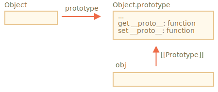

在这部分内容的第一章中，我们提到了设置原型的现代方法。
__proto__ 被认为是过时且不推荐使用的（deprecated），这里的不推荐使用是指 JavaScript 规范中规定，proto 必须仅在浏览器环境下才能得到支持。
现代的方法有：
proto 作为 [[Prototype]] 和可选的属性描述来创建一个空对象。obj 的 [[Prototype]]。obj 的 [[Prototype]] 设置为 proto。应该使用这些方法来代替 __proto__。
例如：
let animal = {
eats: true
};
// 创建一个以 animal 为原型的新对象
*!*
let rabbit = Object.create(animal);
*/!*
alert(rabbit.eats); // true
*!*
alert(Object.getPrototypeOf(rabbit) === animal); // true
*/!*
*!*
Object.setPrototypeOf(rabbit, {}); // 将 rabbit 的原型修改为 {}
*/!*Object.create 有一个可选的第二参数：属性描述器。我们可以在此处为新对象提供额外的属性，就像这样：
let animal = {
eats: true
};
let rabbit = Object.create(animal, {
jumps: {
value: true
}
});
alert(rabbit.jumps); // true描述器的格式与 info:property-descriptors 一章中所讲的一样。
我们可以使用 Object.create 来实现比复制 for..in 循环中的属性更强大的对象克隆方式：
let clone = Object.create(Object.getPrototypeOf(obj), Object.getOwnPropertyDescriptors(obj));此调用可以对 obj 进行真正准确地拷贝，包括所有的属性：可枚举和不可枚举的，数据属性和 setters/getters —— 包括所有内容，并带有正确的 [[Prototype]]。
如果我们数一下有多少种处理 [[Prototype]] 的方式，答案是有很多！很多种方法做的都是同一件事儿！
为什么会出现这种情况？
这是历史原因。
"prototype" 属性自古以来就起作用。Object.create 出现在标准中。它提供了使用给定原型创建对象的能力。但没有提供 get/set 它的能力。因此，许多浏览器厂商实现了非标准的 __proto__ 访问器，该访问器允许用户随时 get/set 原型。Object.setPrototypeOf 和 Object.getPrototypeOf 被加入到标准中，执行与 __proto__ 相同的功能。由于 __proto__ 实际上已经在所有地方都得到了实现，但它已过时，所以被加入到该标准的附件 B 中，即：在非浏览器环境下，它的支持是可选的。目前为止，我们拥有了所有这些方式。
为什么将 __proto__ 替换成函数 getPrototypeOf/setPrototypeOf？这是一个有趣的问题，需要我们理解为什么 __proto__ 不好。继续阅读，你就会知道答案。
```warn header="如果速度很重要，就请不要修改已存在的对象的 [[Prototype]]"
从技术上来讲，我们可以在任何时候 get/set [[Prototype]]。但是通常我们只在创建对象的时候设置它一次，自那之后不再修改：rabbit 继承自 animal，之后不再更改。
并且，JavaScript 引擎对此进行了高度优化。用 Object.setPrototypeOf 或 obj.__proto__= “即时”更改原型是一个非常缓慢的操作，因为它破坏了对象属性访问操作的内部优化。因此，除非你知道自己在做什么，或者 JavaScript 的执行速度对你来说完全不重要，否则请避免使用它。
## "Very plain" objects [#very-plain]
我们知道，对象可以用作关联数组（associative arrays）来存储键/值对。
……但是如果我们尝试在其中存储 **用户提供的** 键（例如：一个用户输入的字典），我们可以发现一个有趣的小故障：所有的键都正常工作，除了 `"__proto__"`。
看一下这个例子：
```js run
let obj = {};
let key = prompt("What's the key?", "__proto__");
obj[key] = "some value";
alert(obj[key]); // [object Object]，并不是 "some value"！这里如果用户输入 __proto__，那么赋值会被忽略！
我们不应该对此感到惊讶。__proto__ 属性很特别：它必须是对象或者 null。字符串不能成为 prototype。
但是我们不是 打算 实现这种行为，对吧？我们想要存储键值对，然而键名为 "__proto__" 的键值对没有被正确存储。所以这是一个 bug。
在这里，后果并没有很严重。但是在其他情况下，我们可能会对对象进行赋值操作，然后原型可能就被更改了。结果，可能会导致完全意想不到的结果。
最可怕的是 —— 通常开发者完全不会考虑到这一点。这让此类 bug 很难被发现，甚至变成漏洞，尤其是在 JavaScript 被用在服务端的时候。
为默认情况下为函数的 toString 以及其他内建方法执行赋值操作，也会出现意想不到的结果。
我们怎么避免这样的问题呢？
首先，我们可以改用 Map 来代替普通对象进行存储，这样一切都迎刃而解。
但是 Object 在这里同样可以运行得很好，因为 JavaScript 语言的制造者很早就注意到了这个问题。
__proto__ 不是一个对象的属性，只是 Object.prototype 的访问器属性：

因此，如果 obj.__proto__ 被读取或者赋值，那么对应的 getter/setter 会被从它的原型中调用，它会 set/get [[Prototype]]。
就像在本部分教程的开头所说的那样：__proto__ 是一种访问 [[Prototype]] 的方式，而不是 [[prototype]] 本身。
现在，我们想要将一个对象用作关联数组，并且摆脱此类问题，我们可以使用一些小技巧：
*!*
let obj = Object.create(null);
*/!*
let key = prompt("What's the key?", "__proto__");
obj[key] = "some value";
alert(obj[key]); // "some value"Object.create(null) 创建了一个空对象，这个对象没有原型（[[Prototype]] 是 null）：
因此，它没有继承 __proto__ 的 getter/setter 方法。现在，它被作为正常的数据属性进行处理，因此上面的这个示例能够正常工作。
我们可以把这样的对象称为 "very plain" 或 "pure dictionary" 对象，因为它们甚至比通常的普通对象（plain object）{...} 还要简单。
缺点是这样的对象没有任何内建的对象的方法，例如 toString：
*!*
let obj = Object.create(null);
*/!*
alert(obj); // Error (no toString)……但是它们通常对关联数组而言还是很友好。
请注意，大多数与对象相关的方法都是 Object.something(...)，例如 Object.keys(obj) —— 它们不在 prototype 中，因此在 "very plain" 对象中它们还是可以继续使用：
let chineseDictionary = Object.create(null);
chineseDictionary.hello = "你好";
chineseDictionary.bye = "再见";
alert(Object.keys(chineseDictionary)); // hello,bye设置和直接访问原型的现代方法有：
proto 作为 [[Prototype]]（可以是 null）和可选的属性描述来创建一个空对象。obj 的 [[Prototype]]（与 __proto__ 的 getter 相同）。obj 的 [[Prototype]] 设置为 proto（与 __proto__ 的 setter 相同）。如果要将一个用户生成的键放入一个对象，那么内建的 __proto__ getter/setter 是不安全的。因为用户可能会输入 "__proto__" 作为键，这会导致一个 error，虽然我们希望这个问题不会造成什么大影响，但通常会造成不可预料的后果。
因此，我们可以使用 Object.create(null) 创建一个没有 __proto__ 的 "very plain" 对象，或者对此类场景坚持使用 Map 对象就可以了。
此外，Object.create 提供了一种简单的方式来浅拷贝一个对象的所有描述符：
let clone = Object.create(Object.getPrototypeOf(obj), Object.getOwnPropertyDescriptors(obj));此外，我们还明确了 __proto__ 是 [[Prototype]] 的 getter/setter，就像其他方法一样，它位于 Object.prototype。
我们可以通过 Object.create(null) 来创建没有原型的对象。这样的对象被用作 "pure dictionaries"，对于它们而言，使用 "__proto__" 作为键是没有问题的。
其他方法：
obj 拥有名为 key 的自身的属性（非继承而来的），则返回 true。所有返回对象属性的方法（如 Object.keys 及其他）—— 都返回“自身”的属性。如果我们想继承它们，我们可以使用 for...in。